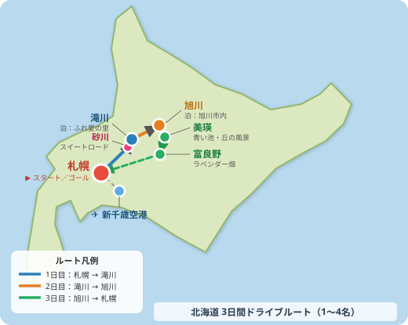
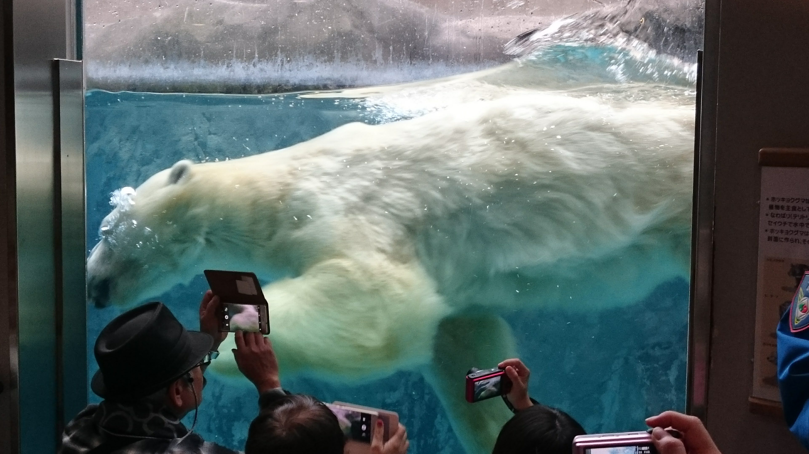

ドライブ旅 / モデルプラン / 1〜4名向け
レンタカーで行く！
北海道の大地を満喫する
3日間ドライブプラン
レンタカーで１人でも、仲間と一緒でも楽しめる３日間のモデルプランです。
滝川・旭川・美瑛・富良野を、北海道・滝川在住の地元目線でご案内します。

このプランの4つのポイント
- 🚗 レンタカーを使って、1人でも、グループでも自分たちのペースで動けます
- 🪂 滝川では日本でも珍しいグライダー体験！大空から北海道の大地を一望できます
- 🐧 旭山動物園はゆっくり半日かけてたっぷり楽しんでほしい、北海道屈指の名所です
- 🌸 7月はラベンダーが見ごろのピーク。富良野の紫色の畑は一度は見てほしい絶景です
3日間のルート早見表
- 1日目：新千歳空港 or 札幌（出発）→ 砂川（寄り道）→ 滝川（泊） ※出発地により所要時間が異なります
- 2日目：滝川 → 旭川・旭山動物園（泊） 高速で約1時間20分・約60km
- 3日目：旭川 → 美瑛（青い池・丘）→ 富良野（ラベンダー）→ 札幌（帰着） 計約3〜4時間

⚠ 宿泊場所が取れない場合の逆ルートについて
この時期の北海道は観光シーズン真っ只中！宿は1日でも早く押さえておくことをおすすめします。7月は人気の宿が早めに埋まることがあります。 希望の宿が取れない場合は 逆ルート（札幌 → 富良野 → 美瑛 → 旭川 → 滝川 → 札幌） でも同様に楽しめます。 宿泊場所を先に押さえてから、全体の計画を立てるのがおすすめです。
1日目：札幌を出発して、私の地元・滝川へ
新千歳空港か札幌市内のレンタカー店で車を借りてスタート。 高速を降りた瞬間に、視界がぱっと開けて北海道らしい大きな空が広がります。ここが私の地元です！
📍 ミニ知識：このエリアの呼び名
砂川・滝川があるエリアは、北海道の中でも「道央・空知地方（そらち）」、 さらに詳しくは「空知地方北部」と呼ばれる地域です。 札幌から車で北へ向かうにつれて、だんだんと畑が広がり、空が大きくなっていくのを感じられます。ちなみに、漫画「銀魂」で有名な漫画家・空知英秋さんはこの空知地方のご出身で、ペンネームもここから来ているそうです！
滝川までの移動時間の目安はこちらです。
- 🚗 札幌市内から：高速道路で約2時間、一般道で約2時間30分
- ✈ 新千歳空港から：高速道路で約1時間40分が目安
滝川へ向かう途中で、砂川奈井江インター（滝川インターの1つ手前）を降りると「砂川（すながわ）」に寄り道できます。 砂川は北海道でも珍しい「スイーツの街」として知られており、ドライブのちょっとしたご褒美にぴったりです。
🍰 すながわスイートロード
国道12号沿いに10軒以上のスイーツ店が並ぶ、砂川市ならではのドライブコース。 和菓子・洋菓子・ソフトクリームなど、個性豊かなお店が揃っています。 ぜひ食べ比べしながら北に向かいましょう！🔗 すながわスイートロード（砂川市公式サイト）
🍎 ナカヤ菓子店（アップルパイ）
1日に最大2,000個売れることもある、北海道を代表するアップルパイのお店。 サクサクのパイ生地にゴロゴロのリンゴがたっぷり入っていて、見た目も豪快です。 人気商品は早めに売り切れることがあるので、午前中の立ち寄りがおすすめ。
💡 買い方はこうです：お店に入ったらまず整理券を取って、番号が呼ばれたら注文するスタイルです。 混んでいても焦らず、番号を待ちましょう。
🍨 岩瀬牧場（ジェラート）
自家製牛乳を使ったジェラートが人気の牧場直営スポット。 濃くてなめらかなミルク感は、新鮮な牧場ならでは。 向かいにあるレストランも美味しいので、お腹が空いていたらぜひセットで立ち寄ってみてください。
🍰 北菓楼 砂川本店（バウムクーヘン・夢不思議）
北海道を代表するスイーツブランド「北菓楼（きたかろう）」の発祥の地がここ砂川。 しっとり柔らかいバウムクーヘンと、大きくてクリームたっぷりのシュークリーム「夢不思議」が看板商品です。 お土産にも喜ばれる一品。
🏭 SHIRO 砂川工場（無料工場見学）
北海道発の人気コスメブランド「SHIRO（シロ）」の製品を作っている工場が砂川にあります。 運が良ければ実際に製品が作られている様子を見学できます。 おしゃれな空間でショッピングも楽しめるので、コスメ好きの方にも特におすすめ。
🌞 ももさんのおすすめ砂川の回り方
砂川のスイーツは種類が豊富なので、全部食べようとするとお腹がいっぱいに！ ナカヤのアップルパイ（午前中に確保）→ 北菓楼で夢不思議→ 岩瀬牧場でジェラートの順で回るのがおすすめです。 余裕があればSHIROの工場見学もぜひ。スイーツ好きな方にとって砂川は本当に夢のような街ですよ！グライダーは、エンジンを持たない飛行機です。まるで大きな紙飛行機のように、風の流れを体全体で感じながら空を滑るように飛びます。 飛び方もユニークで、まず小型のプロペラ機にロープでつないでもらい、空の高さまで引っ張り上げてもらいます。 ある高さに達したらロープを切り離し、そこからはエンジンの音もなく、ただ風だけを使った静かな単独飛行がはじまります。 眼下に広がる石狩平野の大パノラマを、音のない世界でじっくりと味わえる、ここだけの特別な体験です。
🌁 たきかわスカイパーク（グライダー体験飛行）
滝川は「グライダーのまち」として知られ、日本で最初に本格的なグライダー飛行が行われた場所です。 石狩平野を眼下に、エンジンなしで風だけを使って大空を飛ぶ体験はここだけのもの。 事前予約しておくと安心です。
🍤 松尾ジンギスカン 滝川本店
1956年創業、味付けジンギスカンのパイオニア。 羊肉を甘めのタレに漬け込んだ松尾ジンギスカンは、北海道のソウルフードのひとつです。 「本物のジンギスカン」を本店でぜひ味わってみてください。
🍟 ジンギスカン豆知識：札幌式と滝川式のちがい
北海道のジンギスカンには2つのスタイルがあります。札幌式：生ラムをそのまま焼いて、あとからタレにつけて食べる。
滝川式（松尾式）：生ラムをあらかじめタレに漬け込んで、焼いたらそのまま食べる。
松尾ジンギスカン本店は「滝川式」発祥のお店。ほんのり甘いタレが染み込んだやわらかいラムは、一度食べたら忘れられない味です！
🎁 お土産：モンモオ（おかだ菓子舗）
滝川を代表するソウルスイーツ。手芒豆・牛乳・バターを使った白餡を、 醤油風味の皮で包んだ焼き菓子で、全国菓子大博覧会で大臣賞も受賞しています。 1日に1,000個以上売れる滝川の名物。ぜひ旅のお土産に！
🌞 滝川に来たら絶対これ！私が滝川で一番おすすめするお菓子です。 札幌や新千歳空港でも買えますが、せっかくなら地元・滝川で買っていってください。
♨ 宿泊：滝川ふれ愛の里
自然の中でゆっくり過ごせる施設です。温泉で1日目の疲れを癒やすのがおすすめ。 コテージやグランピングに宿泊したい場合は、事前予約が必須です。 特に7月は混み合うので、早めに押さえておきましょう。
2日目：旭山動物園でたっぷり半日
滝川から高速で約1時間20分、旭川へ。 着いたらまっすぐ旭山動物園へ向かいましょう。 「行動展示」と呼ばれる、動物の自然な動きを間近で見られる展示方法が有名で、 日本一と言われることもある動物園です。広いのでしっかり半日かけてじっくり回ってください。
旭川市旭山動物園
ペンギンが頭上を泳ぎ、ホッキョクグマが間近に見られる迫力の展示が楽しめます。 開園直後に入ると比較的空いていておすすめ。 暑い日はこまめに水分補給をしながら、全エリアをゆっくり回ってみてください。

旭川ラーメン（夕食）
旭川ラーメンはしょうゆベースに豚骨・鶏がらをブレンドした、コクのある深い味わいが特徴。 「蜂屋」「梅光軒」「山頭火」などが有名です。 動物園でたっぷり歩いた後のラーメンは格別です！
3日目：美瑛の丘と富良野のラベンダーに感動する
旭川から車で約1時間、美瑛に到着。 なだらかな丘が続く農村風景は、まるで絵のよう。 そこから南へ約30分走ると、7月の富良野はラベンダーが見ごろを迎えています。 一面の紫色の畑は「これが北海道の夏だ！」と感じさせてくれる絶景です。
青い池（美瑛）
コバルトブルーの神秘的な池。天気や光の加減によって色が変わります。 Appleの壁紙にもなったことがある有名スポットです。早い時間に行くと混雑を避けられます。

パノラマロード（美瑛の丘ドライブ）
なだらかな丘に畑が広がるドライブコースです。 「ケンとメリーの木」「セブンスターの木」など、丘に立つ有名な木が点在しています。 ゆっくり走りながら自分だけのお気に入りの景色を見つけてみてください。

ファーム富田（富良野）
富良野ラベンダーの代名詞といえばここ。7月上〜中旬はラベンダーが見ごろのピークです。 なだらかな丘に広がる紫色の畑は圧巻で、ラベンダーの香りに包まれた空間は 道外のお客様に特に喜ばれます。
富良野を満喫したら、高速道路で札幌へ。約2時間で到着します。 帰りの道中も、北海道の広大な景色をもう一度楽しみながら帰りましょう。
💡 レンタカー旅のコツ
北海道の道は直線が長く、ついスピードが出てしまいます。制限速度を守って安全運転で。 ガソリンスタンドが少ないエリアもあるので、こまめに給油しておくと安心です。 旭川〜美瑛・富良野間は夏の繁忙期に混雑することも。時間に余裕を持って動きましょう。⚠ 注意してほしいこと
北海道は距離感が本州と全然違います。「近そうで実は遠い」ことが多いので余裕のある計画を。 夕方や早朝は野生の鹿やキタキツネが道路に出てくることがあります。特にご注意を。 旭山動物園は夏の繁忙期に混雑します。開園直後の入園がおすすめです。💌 ご質問はお気軽に！
滝川や近郊の街について、もっと知りたいことや気になることがあれば、リベシティのプロフィールページからお気軽にご連絡ください。 地元在住者として、できる限り詳しくご案内いたします😊